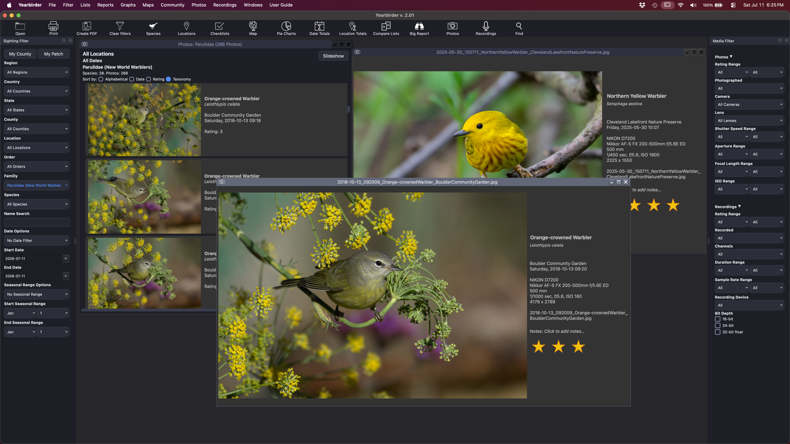
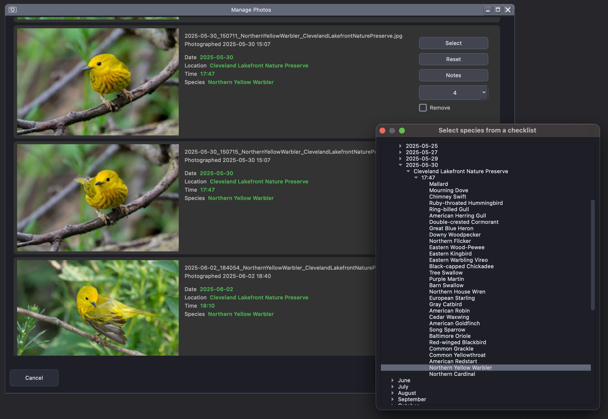
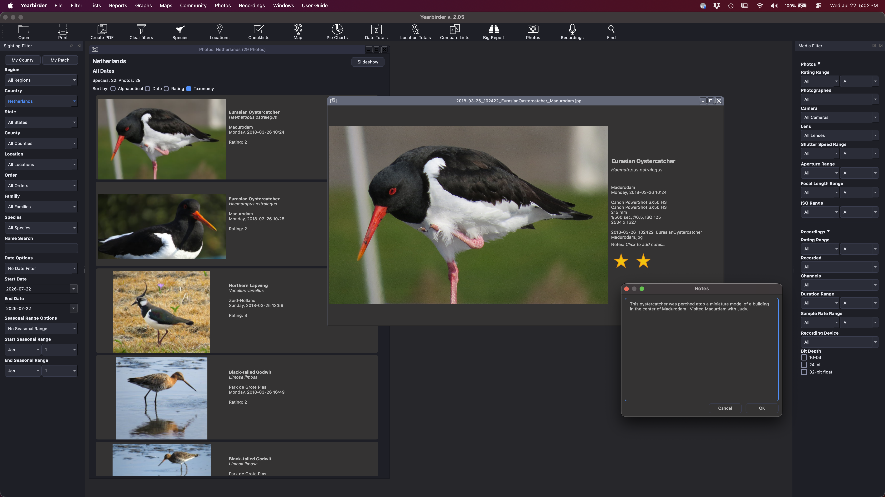
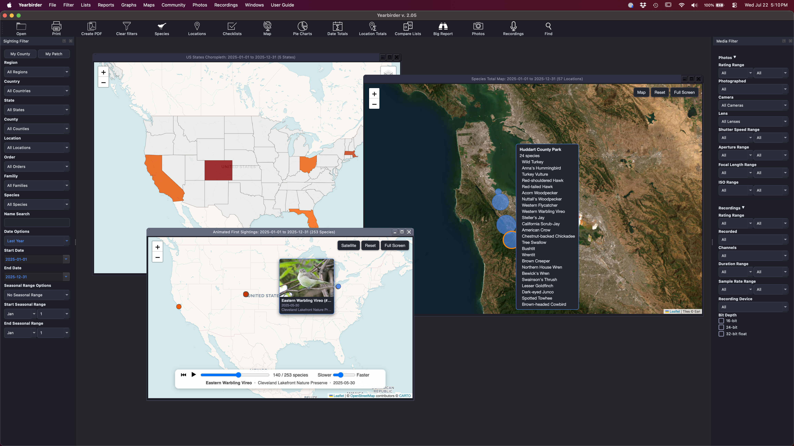
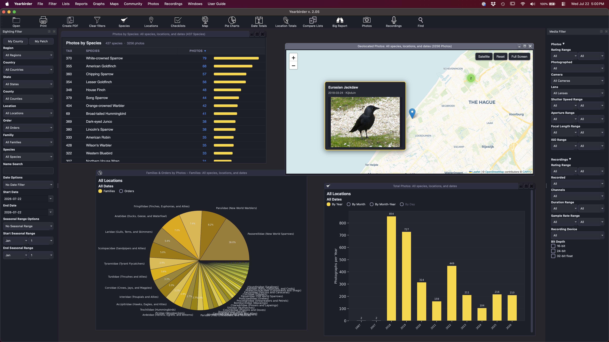

If you're a photographer, Yearbirder can be your primary app for viewing and managing your bird photos. Filter your photos the way you filter your sightings, so you can instantly see your photos of a species, a county, a time of year, a rating, or any combination you choose.

Browse your photos by any filter — here, thumbnails sorted and rated the way a birder thinks.
Yearbirder helps you import your photos by analyzing their file name, date, and time to suggest matching checklists and species automatically. Confirm or adjust the suggestions, add a rating and notes, and your photos are catalogued alongside the sightings they belong to.

Browse your photos as thumbnails, then open any one in an intuitive enlargement view with full-screen viewing and easy zooming down to the pixel level. Rate your photos so you can sort and filter to your best work in an instant.

Every geotagged photo can be plotted on an interactive map — hover to preview the thumbnail, click to enlarge. Play your photos back in sequence on an animated map to watch, for example, your progress photographing American Kestrels across the country.

Turn your photo collection into charts — how many species you've photographed, your year-to-date pace, and your totals by family. And when your files need tidying, batch-rename them using species name, date, time, and location components in a single pass.

Beyond species, region, date, and season, Yearbirder lets you filter your photos by the EXIF data your camera recorded — so you can find exactly the shots you're after.